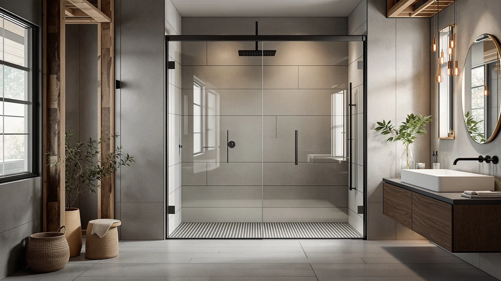

Enso Senka Double Sliding Review (2026): Worth It?
Prices and picks verified as of October 2026. Independent, reader-supported reviews.


Quick Answer
This enso senka double sliding review compares the $299.00 ENSO SENKA Double Sliding Glass door, a fixed 48 inch by 72 inch double sliding design, against three lower-priced sliding alternatives ranging from $289.99 to $298.99. It's the priciest door in this comparison by a slim margin, and whether that extra cost is worth it depends on how its fixed width lines up with your own opening.
Our pick: Enso Senka Double Sliding Glass, $299.00 Check Price on Amazon
Bottom line: our top pick is the Enso Senka Double Sliding Glass Shower Door 44-48" W x 72" H at $299.
Things to Know Before You Buy
- At $299.00, the ENSO SENKA Double Sliding Glass costs more than every alternative in this review. The NGTEEN sits $0.01 behind it at $298.99, the SierraSquad lists at $292.89, and the KisaTub comes in at $289.99.
- The 48 inch width and 72 inch height are fixed dimensions, not adjustable. The NGTEEN alternative below spans an adjustable 56 to 60 inch range instead, which forgives an imprecise measurement.
- The listing doesn't specify a frame material. The specs table confirms the 48 by 72 inch size and the double sliding mechanism, but the frame finish is left blank.
- The NGTEEN Frameless Glass Shower Door undercuts the ENSO SENKA by a single cent. It trades a fixed size for an adjustable 56 to 60 inch frameless width.
- The KisaTub shares the ENSO SENKA's double sliding mechanism at $289.99. That's the largest price gap in this comparison, $9.01 below the ENSO SENKA.
This enso senka double sliding review compares the $299.00 ENSO SENKA Double Sliding Glass door against three lower-priced sliding alternatives, each built for a shower opening in a similar size range. The ENSO SENKA's defining details are its fixed 48 inch wide, 72 inch tall footprint and its double sliding glass panels, and those two facts shape every comparison that follows.
We wrote this enso senka double sliding review because shoppers comparing sliding shower doors near the $300 mark often assume every listing in that range offers the same hardware. The ENSO SENKA sits at the top of this comparison on price, $0.01 above the NGTEEN Frameless Glass Shower Door, and that's why the blank frame material field in its specs table matters as much as the headline price.
Why You Should Trust Us
Ilane Tall covers bath fixtures for Best Shower Doors and has researched shower doors across frameless, corner, and sliding designs. For this enso senka double sliding review, she compared the ENSO SENKA's price, dimensions and sliding mechanism against three alternatives in a similar size range. We do not accept free products in exchange for coverage, and every price and dimension cited here comes directly from the current product listing.
Our editorial process treats a double sliding mechanism as one factor among several, not an automatic upgrade. That detail earns credit in this review, but the ENSO SENKA still has to justify a $299.00 price against three doors that list for less. That approach shapes every comparison in this piece.
Our Research Experience
This enso senka double sliding review is based on research, not physical use. We compared the ENSO SENKA Double Sliding Glass against three alternatives using the specifications, pricing and product listings available for each door. We do not run a fake testing lab, and we do not claim to have installed or lived with any of the doors covered here.
We looked closely at how the ENSO SENKA's fixed 48 by 72 inch footprint compares to the NGTEEN's adjustable 56 to 60 inch width and the SierraSquad's aluminum frame, since sizing flexibility and frame material affect both installation and price in ways a headline number alone would miss.
We also cross-checked pricing for all three alternatives against the current listings to confirm nothing had shifted since publication. If a data point wasn't available, such as the ENSO SENKA's frame material, we noted that gap rather than estimate a number the listing doesn't provide. The same approach applied to the SierraSquad's aluminum frame and the NGTEEN's adjustable width, both of which we confirmed directly against the product name and listed specifications rather than a third-party source.
This enso senka double sliding review updates its pricing and specifications as listings change, so the figures above reflect what each seller published at the time we last checked. If a price shifts after publication, treat the dollar gap between doors as a guide rather than a guarantee.
Overview & Specs

Enso Senka Double Sliding Glass
What we like
- The double sliding panels cover a 48 inch wide opening without needing floor clearance for a swinging door
- The 72 inch height is stated plainly in the listing, giving you an exact number to check against your own stall
- The glass construction matches the sliding mechanism shared by the KisaTub alternative covered below
Flaws but not dealbreakers
- At $299.00, it costs more than every alternative in this comparison, including $0.01 more than the NGTEEN
- The 48 inch width and 72 inch height are fixed, unlike the NGTEEN's adjustable 56 to 60 inch range
- The listing doesn't specify a frame material, so confirm hardware finish and glass thickness before you order
| Material | — |
| Size | 48" W X 72" H |
The ENSO SENKA Double Sliding Glass is the priciest door in this comparison: a $299.00 build with double sliding panels fixed to a 48 inch wide, 72 inch tall opening. The specs table confirms the size but leaves frame material blank, so the sliding mechanism and the fixed footprint are the two details you can check before you buy.
That build costs $0.01 more than the NGTEEN, $6.11 more than the SierraSquad, and $9.01 more than the KisaTub, the three alternatives covered below. The question is whether a fixed 48 by 72 inch sliding door is worth that premium over doors priced within a few dollars of each other.
What We Liked
The clearest strength in this enso senka double sliding review is the sliding mechanism itself. The ENSO SENKA's double sliding panels move along a fixed 48 inch track, and that design doesn't need the floor clearance a pivot door requires, a detail worth weighing if your bathroom layout is tight.
The 72 inch height is stated plainly in the specs, giving you an exact number to check against your own opening before you order. That level of specificity carries through to the width as well, which the listing fixes at 48 inches rather than leaving the dimension vague.
We also liked that the ENSO SENKA shares its double sliding mechanism with the KisaTub Double Sliding Glass Shower Door covered later in this comparison. That overlap gives you a direct read on what the extra $9.01 buys when the mechanism itself doesn't change: mostly a different size, at a $299.00 price tag instead of $289.99.
What Could Be Better
Price is the clearest drawback in this enso senka double sliding review. At $299.00, the ENSO SENKA costs $0.01 more than the NGTEEN Frameless Glass Shower Door, $6.11 more than the SierraSquad Aluminum Shower Door, and $9.01 more than the KisaTub Double Sliding Glass Shower Door.
The fixed 48 by 72 inch dimensions also mean less forgiveness for an imprecise measurement than the NGTEEN, which adjusts across a 56 to 60 inch width. And because the specs table leaves the frame material blank, you won't find a confirmed hardware finish the way you can on the SierraSquad's aluminum frame.
Who Is It For?
The ENSO SENKA Double Sliding Glass makes the most sense if your opening measures close to 48 inches wide by 72 inches tall, and you'd rather confirm an exact fixed size than rely on an adjustable range.
If your budget caps closer to $290, or if your opening doesn't match the ENSO SENKA's fixed dimensions, the three alternatives below cover a similar sliding or aluminum-frame option for less. Check each listing's width and height against your own stall, since the NGTEEN adjusts where the ENSO SENKA does not.
Buyers who prioritize sizing flexibility over a confirmed fixed footprint should look at the NGTEEN first, and anyone who wants the lowest price while keeping a double sliding mechanism will find the KisaTub a closer fit than the ENSO SENKA. Shoppers who care most about a confirmed frame material over mechanism or price should start with the SierraSquad instead, since it's the only door in this comparison with a stated aluminum build.
Alternatives to Consider
The ENSO SENKA Double Sliding Glass isn't the only option in this enso senka double sliding review, and the three doors below cover a similar price range with different sizes and frame materials. Each one trades some combination of width flexibility, frame material, or price for a different fit, so weigh which trade-off matters most for your bathroom.

Editor's Pick
Frameless Glass Shower Door 56-60"
At $298.99, the NGTEEN undercuts the ENSO SENKA by a single cent and adds an adjustable 56 to 60 inch frameless width, a strong alternative if your opening doesn't match a fixed 48 inch door.
$298.99
Check Price on Amazon
Best Value
Aluminum Shower Door 60x59 inch
The SierraSquad lists at $292.89, $6.11 less than the ENSO SENKA, with an aluminum frame built for a 60 by 59 inch opening, worth a look if you want a confirmed frame material at a lower price.
$292.89
Check Price on Amazon
Premium Choice
Double Sliding Glass Shower Door
The KisaTub is the most affordable door in this comparison at $289.99, a double sliding glass design that shares the ENSO SENKA's mechanism for $9.01 less, the pick if you want the same sliding setup without the higher price.
$289.99
Check Price on AmazonFrequently Asked Questions
How much does the ENSO SENKA double sliding shower door cost?
The ENSO SENKA Double Sliding Glass shower door lists at $299.00, which makes it the most expensive door in this enso senka double sliding review. The NGTEEN alternative runs $298.99, the SierraSquad is $292.89, and the KisaTub is $289.99.
What size opening does the ENSO SENKA double sliding shower door fit?
The ENSO SENKA is built for a 48 inch wide, 72 inch tall opening with double sliding glass panels. Measure your stall at multiple points before you order, since a fixed-size sliding door depends on an accurate width.
Is the ENSO SENKA worth the price over the NGTEEN alternative?
It depends on whether your opening matches a fixed size. The ENSO SENKA covers a 48 by 72 inch footprint for $299.00, while the NGTEEN adjusts across a 56 to 60 inch width for one cent less. Check your stall's exact width before you decide.
Final Verdict
This enso senka double sliding review comes down to one trade-off: a fixed 48 by 72 inch double sliding door at $299.00 against three alternatives that cost less and offer more sizing or material flexibility. If your opening measures close to 48 inches wide by 72 inches tall and you want a confirmed double sliding mechanism, ENSO SENKA earns its position at the top of this comparison, even if its margin over the NGTEEN is one cent. If sizing flexibility matters more than a fixed footprint, the NGTEEN covers an adjustable 56 to 60 inch range for less, and the SierraSquad or the KisaTub offer bigger savings with an aluminum frame or a matching sliding mechanism. Either way, confirm your opening's exact dimensions before you buy, since that's what separates a fixed-size door like the ENSO SENKA from the adjustable alternatives in this review.